| 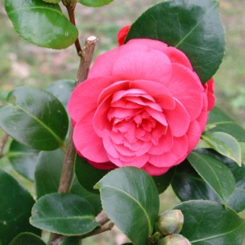
C. japonica 'Bella Lambertii' Forma doble formal-forma de rosa Tamaño Tamaño mediana Diámetro (cm) 10 Profundidad (cm) |
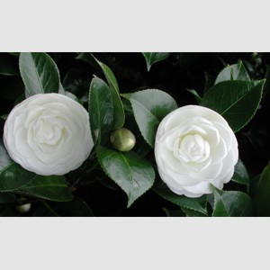
C. japonica 'Albear' Forma doble formal, imbricada Tamaño Tamaño mediana Diámetro (cm) 8 Profundidad (cm) |
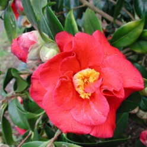
C. japonica 'Adolphe Audusson' Forma semidoble Tamaño Tamaño mediana-grande Diámetro (cm) 9-10,5 Profundidad (cm) 5,5-7 |
| 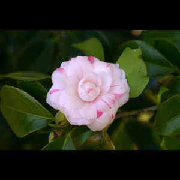
C. japonica 'Amyntas' Forma doble formal-forma de rosa ocasional Tamaño Tamaño pequeña-mediana Diámetro (cm) 6,5-8 Profundidad (cm) 3-3,5 |
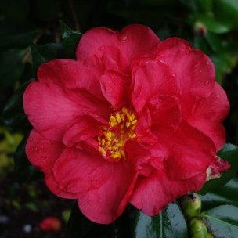
C. japonica 'Bella Otero' Forma semidoble Tamaño Tamaño grande Diámetro (cm) 10-12 Profundidad (cm) |

C. japonica 'Akashigata' Forma Forma semidoble Tamaño Tamaño grande Diámetro (cm) 12-14 Profundidad (cm) |
| 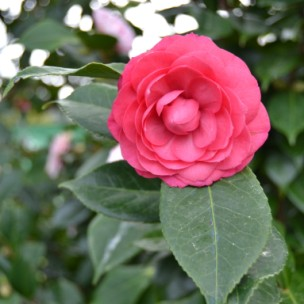
C. japonica 'Angela Cocchi Rouge' Forma doble formal-forma de rosa Tamaño Tamaño mediana Diámetro (cm) 8-10 Profundidad (cm) |
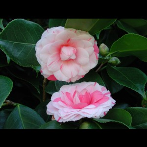
C. japonica 'Angela Cocchi' Forma doble formal-forma de rosa Tamaño Tamaño mediana Diámetro (cm) 8-10 Profundidad (cm) |
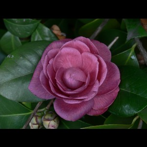
C. japonica 'Angelina Vieira' Forma doble formal-forma de rosa Tamaño Tamaño Diámetro (cm) Profundidad (cm) |
| 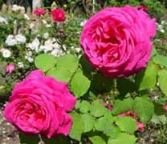
Borbonianos - Rosal Borboniano Rosales de desarrollo abierto, muy vigorosos. Pueden moldearse como trepadores. Semireflorencientes. |
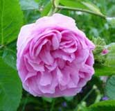
Centifolia (Provence) - Rosas Centifolias Arbustos espinosos, con flores muy fragantes. Las flores son, en general, dobles o plenamente dobles, que aparecen en solitario o en grupos de tres. |
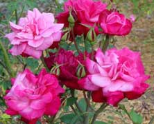
China - Rosas Chinas Pequeños o medianos arbustos remontantes de ramillas abiertas, larguiruchos. Flores simples o dobles, que aparecen en solitario o en grupos de 2-13. Floración de verano a otoño |
| 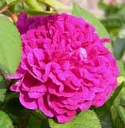
Gallica - Rosas gallica Rosales muy densos y compactos. Producen flores de vivos colores generalmente reunidas en ramilletes de 3 o más durante los meses de verano. Muy fragantes. |
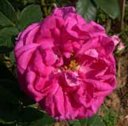
Musgoso - Rosales Musgosos Arbustos poco densos pero muy atractivos por el follaje y por la vellosidad que aparece en la parte inferior del cáliz, con aspecto de musgo o moho. Desarrollo bajo. Las hojas son en general de color verde oscuro. |
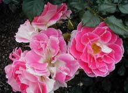
Patio - Rosas tipo Patio Arbustos remontantes. Altura: 35-60 cm y anchura igual: 30-60 cm. Producen ramilletes compuestos en general por 3-11 flores simples a dobles, que florecen en verano-otoño. |
| 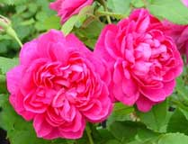
Portland - Rosas tipo Portland Arbustos de desarrollo vertical, densos, compactos, pero menos vigorosos y más reflorecientes que los Borbonianos (Bourbon) de los que provienen. Portadores de grupos laxos de flores semidobles o dobles en verano-otoño, dispuestas en solitario o bien en grupos de a tres. |
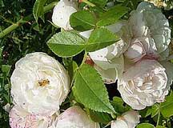
Sempervirens - Rosas tipo Sempervirens Rosales trepadores semiperennes, portadores de numerosas flores muy recurrente en el verano, especialmente al final del verano. Flores semidobles a plenamente dobles. |
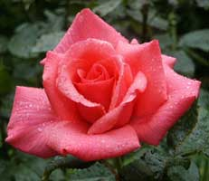
Híbridos de Té - Híbrido de Té - Rosa Híbrido de Té - Rosas Híbridos de Té - Rosal de pie bajo Este es el grupo más grande de rosas, el más popular y el más conocido. Es la rosa típica. - Arbustos bajos, de 0,5 a 1 m. |